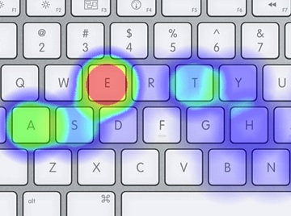
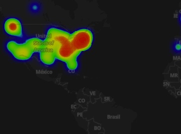
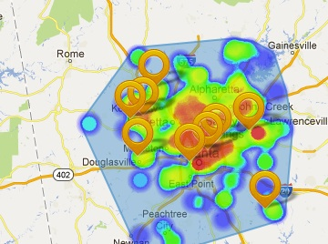
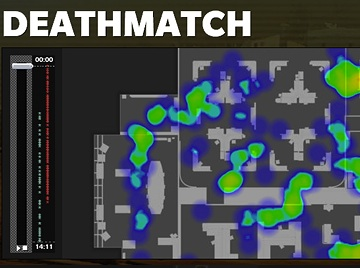

Showcases Real world usage of heatmap.js
Did you build an awesome project using heatmap.js?
Please let me know about it! If you send me a screenshot and a short description about your project I can add you to the list.
Please let me know about it! If you send me a screenshot and a short description about your project I can add you to the list.
-

Heatmap Keyboard
Realtime Keyboard Heatmap showing the character distribution of texts
Visit project
Author: Patrick Wied -

A day in the life
A fullscreen leaflet heatmap layer animation of a day in the life of the New York Times
Visit project
Author: Alastair Coote -

Nearby Now
Gmaps heatmap layer to show realtime data of services provided around you
Visit project
Author: Barry Harkness -

Social Club Match Statistics
A heatmap overlay for Max Payne 3 game maps to indicate flashpoints and bottlenecks.
Visit project
Author: Rockstar Games